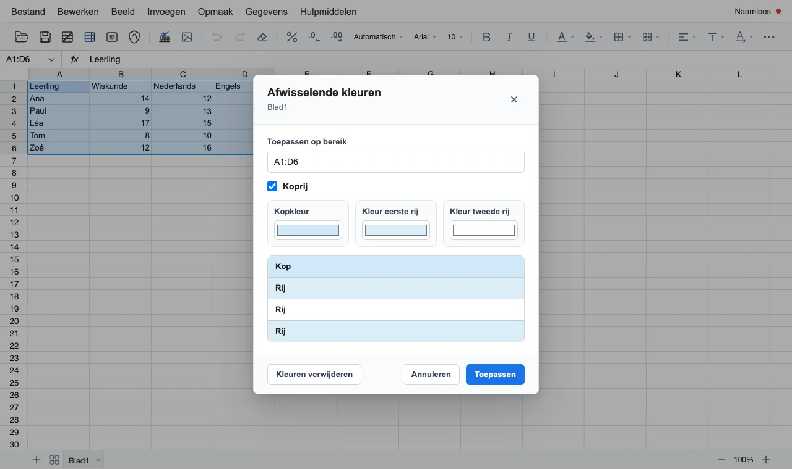

Opmaak
Tekst
| Opdracht | Toegang |
|---|---|
| vet, cursief, onderstreept | ; Ctrl B, Ctrl I, Ctrl U |
| lettertype | lijst Arial: dertien lettertypen |
| grootte | lijst 10, of Opmaak › Tekengrootte: 9 tot 72 |
| tekstkleur, achtergrondkleur | |
| opmaak wissen | , Opmaak › Opmaak wissen |
In het palet van een kleur haalt Reset color ze weg; Aangepast opent de kleurkiezer van het systeem.
Tijdens het wijzigen van een cel geldt de opmaak voor het geselecteerde deel van de tekst.
Uitlijning
| Opdracht | Keuzes |
|---|---|
| horizontaal | links, midden, rechts |
| verticaal | boven, midden, onder |
| draaiing | schuin, verticaal, gestapeld |
| terugloop | Overlopen: over de lege buurcellen; Terugloop: op meerdere regels; Afkappen: afgekapt aan de rand |
Zonder gekozen uitlijning staan getallen en datums rechts, de rest links.
Randen
tekent de gekozen rand; de pijl geeft de zijden (boven, buiten, binnen, alle, geen, diagonaal), de kleur en de stijl van de lijn. Kies kleur en stijl vóór de zijde.
Samenvoegen
of Opmaak › Cellen samenvoegen:
| Opdracht | Effect |
|---|---|
| Alles samenvoegen | één cel, die één inhoud behoudt |
| Verticaal samenvoegen | één cel per kolom |
| Horizontaal samenvoegen | één cel per rij |
| Samenvoegen opheffen | geeft de cellen terug |
Een bereik met samengevoegde cellen kan niet gesorteerd of gefilterd worden.
Afwisselende kleuren
of Opmaak › Afwisselende kleuren... kleurt om de andere rij van het geselecteerde bereik, desgewenst met een koprij. De drie kleuren zijn te kiezen.

Het zijn gewone achtergrondkleuren: ze volgen geen sortering of ingevoegde rij. Kleuren verwijderen wist ze uit het bereik.
Rasterlijnen
of Beeld › Weergeven › Rasterlijnen verbergt of toont de grijze lijnen, in alle bladen van de werkmap. Het afdrukken heeft zijn eigen instelling.
Voor een kleur die van de waarde afhangt, zie Voorwaardelijke opmaak.